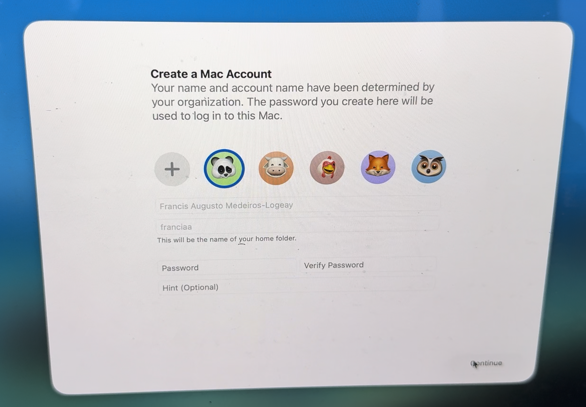
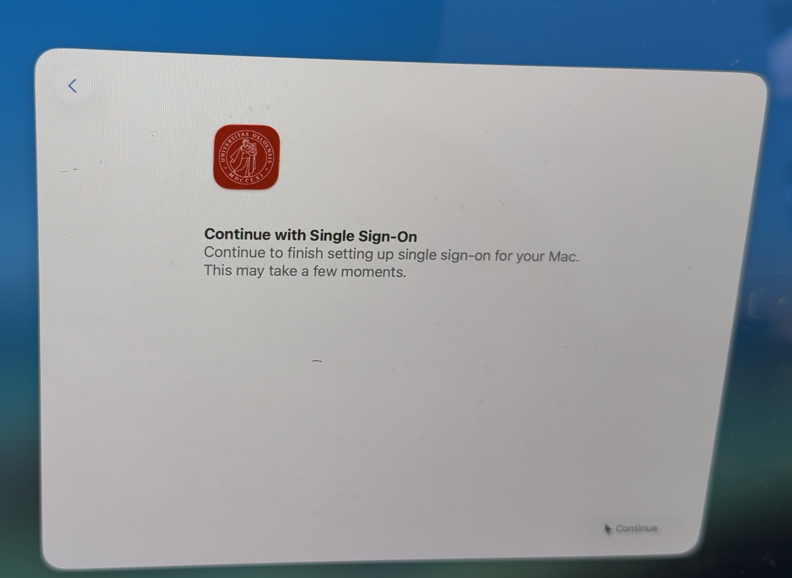
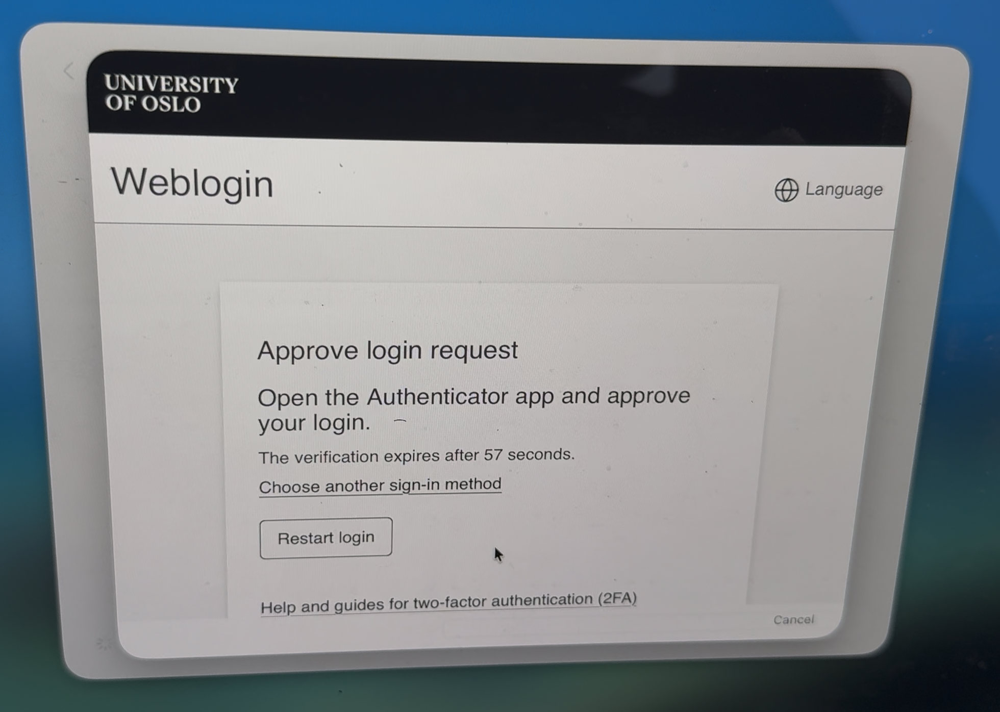

Platform Single Sign-on: Simplified setup
Let’s discuss a bit about some of the forms to deploy Platform Single Sign-on.
We at the University of Oslo developed an open-sourced based Platform Single Sign-on Extension. You can find it here: https://github.com/unioslo/keycloak-psso-extension
But as we started to use this extension, we ended up with a few questions: how do we use biometrics for authentication? How do users setup Platform SSO on the Setup Assitant?
I still have a lot of questions, but as time goes by, and as I follow useful discussions on the MacAdmins slack, some of the things are becoming a bit more clear to me. Note that I have not by any measure figured everything out, but I’d like to share what is now my understanding about setting up Platform SSO during the Setup Assistant. There might be misunderstandings from my part, so take this blog post more as a state of what I understand than as a guide of how things actually are.
It seems that there are two ways to do it - both very similar from the user perspective, but with different outcomes for the Mac administrator. It also seems that there is a bit of a confusion between two types of Platform SSO registration during Setup Assistant.
Simplified Setup
Starting with macOS 26 (Tahoe), it became possible to configure Platform SSO during the Setup Assistant. Your extension needs to support - I think - v2.0 of Platform Single Sign-on. There’s no new capability that is required from your MDM to support this.
What do you need to implement it?
- a bootstrap package that installs your extension during device enrollment. This means that the package needs to be installed by the
InstallEnterpriseApplicationcommand - which is what the major MDM products use to install initial packages; - a Platform SSO profile that has the key
EnableRegistrationDuringSetup. I didn’t see that addingEnableCreateFirstUserDuringSetupdid any difference here.
What will happen here?
- Right after Device enrollment into the MDM, your Mac will receive the SSO Extension and its PSSO profile.
- Right after enrollment, the user will be presented with the PSSO registration screen:

- After clicking on “Continue”, the user will then use his IdP credentials to authenticate:

Note that this requires the IdP to support a Login request with the Password grant type.
-
the device is now registered on the IdP, but not (yet) the user;
-
The user will then be authenticated to the IdP, and his user data, available on his ID token, can be used to pre-fill the first user creation on that Mac:

- Later, when the Setup Assistant starts to configure user-specific things, the user is asked to register on Platform SSO. This time, this is the user, not the device, registration:

The user might be prompted to allow this registration, usually with the Touch ID if you had it configured during the previous steps of the Setup Assistant. This happens in some circumstances, such as when the user had to use his credentials to set up Filevault prior to this step, or if the user goes back on the Setup Assistant and attempts PSSO user registration again (for example after a failed registration). Othwerise, the user goes straight to PSSO user registration.
Then, the IdP might want to authenticate the user on its native interface, for example, to ask for 2FA:

So, this is what most of the vendors call as the “Simplified Setup”. It doesn’t really require MDM support per se. The requirements are basically that:
- the PSSO extension needs to be installed right away by the MDM, preferably as a bootstrap package, because it needs to be available for the PSSO extension;
- the PSSO Extension needs to be installed and contains the
EnableRegistrationDuringSetup
This flow does the job, but it has one little problem: if you require the user to authenticate to the MDM prior device enrollment, you end up with one more authentication than it is necessary. That’s a problem that can be solved with the other flow for PSSO during Setup Assistant:
The 403 flow aka ADEPsso aka Platform SSO during device enrollment
This flow requires MDM support. Omnissa announced support for it on its 2604 release, and Jamf seems to support it, but I can’t confirm as our organization doesn’t use it.
Apple documents this flow on its Implement Platform SSO during device enrollment. This is substantially different from the flow I described as the “Simplified Setup”. Some vendors call this flow also as “Simplified Setup”, but there’s really no source of truth regarding this. Joel Rennich, in a presentation at MacSysAdmin in 2025, called this AdePSSO, and many admins - myself included - uses this name to make it a point that this is distinguished from the other so-called “Simplified Setup” method.
The flow here is basically:
- prior to device enrollment into the MDM, the device gets a 403 HTTP response code from the MDM with a JSON object containing links to the PSSO extension profile, the manifest for the PSSO extension app, and the
authURL, which will be use for IdP authentication. - The user will then, prior to MDM enrollment, be presented with a PSSO enrollment where both the device and the user will be registered into the IdP. This authentication can be reused by the MDM.
- The machine starts MDM enrollment, Setup Assistant executes, the first user is created with the data fetched from the IdP, and the machine is setup normally.
This flow has the immediate advantage that the user potentially will have to type his password only once (twice if he is required to choose a password for his local user). It will be used for PSSO registration (device and user) and MDM enrollment. No need to even require it prior to user registration (on the “Somplified Setup” flow, the user needs to type the password - or use touch id, if available, to proceed to user registration).
This is a very nice flow. However, it has a bit of complexity that might be a deal beaker for many organizations:
- It requires some MDM changes. Support has been announced by most MDM vendors, but it is a bit more complex to use it;
- It potentially breaks a few assumptions and uses:
- the profile distributed with this flow probably shouldn’t use the
RegistrationTokenfor silent device registration, since it can be downloaded via HTTPS on a public address; - Ideally, the MDM should be able to validate the access token used on PSSO registration to authenticate the user. This requires some sort of integration between the MDM and IdP. I am not sure how vendors will solve this problem. Since there are only two major vendors using PSSO (Microsoft and Okta), maybe some MDM solutions like Jamf already thought this through.
- you might not be able to enforce biometrics when registering PSSO this way, since the user still hasn’t registered his fingerprint. In order to uspport it later, re-registration will be necessary. This flow also affects the “Simplified Setup”, but there this is more like a bug, since the user already have Touch ID configured if that’s included on your DEP profile.
- the profile distributed with this flow probably shouldn’t use the
See Joel’s presentation here so that you see how this flow works.
Which flow should I implement?
This is a difficult question. If your MDM supports it and you have a good integration between your MDM and IdP, AdePSSO offers a better user experience by reducing the amount of times the user has to type his password.
However, if you require MDM authentication during device enrollment, AdePSSO might - and I’m not sure how - require tighter integration between the MDM and the IdP, for two reasons:
- if silent device registration is important for you, and device attestation is not enough, for example in case your IdP wants to check with the MDM if that device belongs to it, it might need to query the MDM for that info. This might be overkill for most organizations, but with
RegistrationTokenyou had that info that tied the device, the IdP and the MDM together. With AdePSSO, you loose this. Though, if the device already got an answer from the MDM, so this might be overthinking - If your MDM needs to use the access token obtained during the PSSO registration, it needs to know how to use it to validate the enroll request. See this. This means that the MDM should have the IdP configuration in order to introspect that token. I am not able to verify as of now if the MDM’s who support AdePSSO have that kind of verification.
Summary
The Simplified Setup is available now. It is very similar from the user perspective. It might feel a bit less streamlined than the AdePSSO flow. So here’s a choice between the ultimate experience, but with a few caveats, and a flow that doesn’t require any new MDM capability other than delivering a bootstrap package and the profile.
I’m curious to see if Apple will come with something to easen up these flows on WWDC. It seems to me that, while Apple did an amazing job by designing PSSO to be open to anyone who wants to implement it, its biggest flaw in my opinion is that sometimes it assumes that there will be some sort of integration between the IdP and the MDM. This ends up making it dependant on how well the IdP can talk to the MDM and vice-versa. A big vendor might implement support for Microsoft and Okta, but then support will be non-existant for smaller and/or on-premise IdPs.